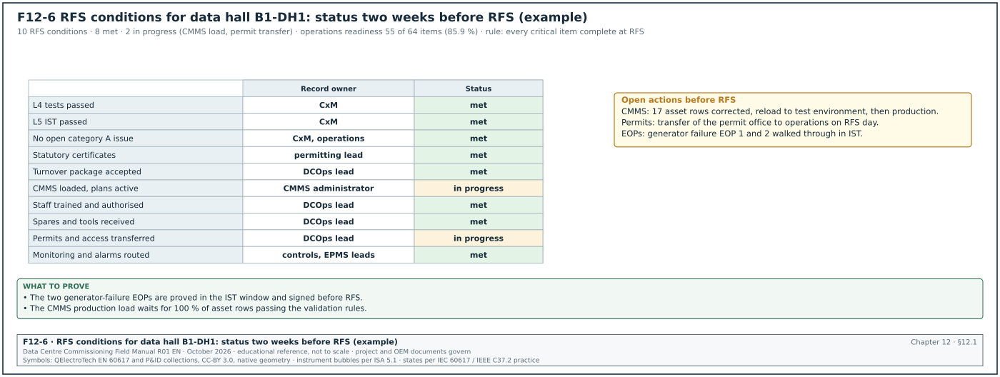
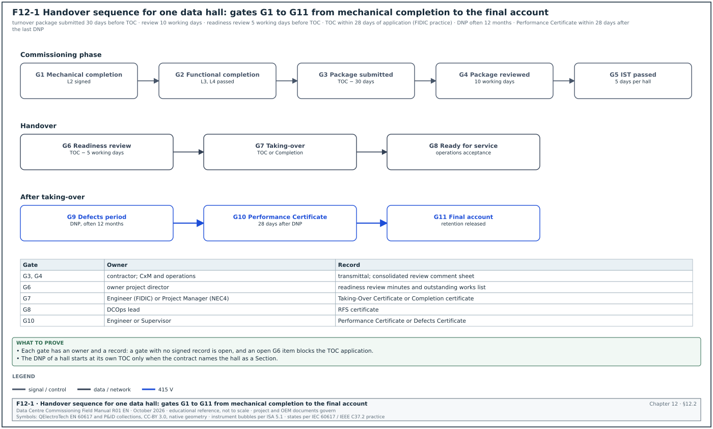
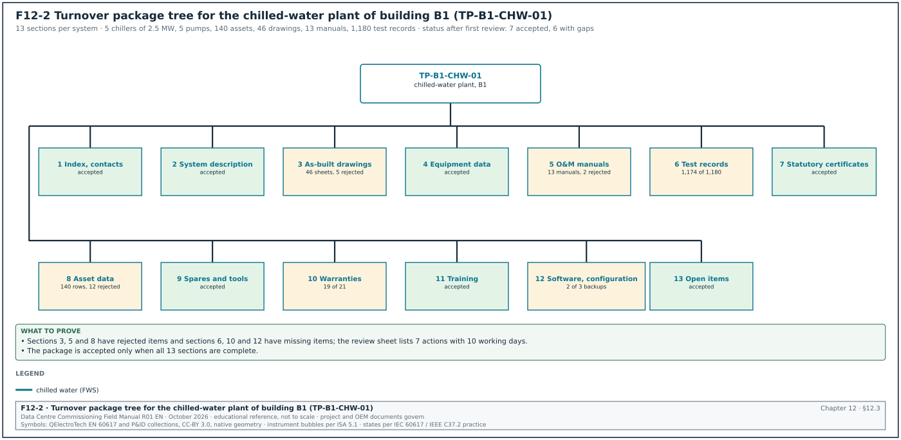
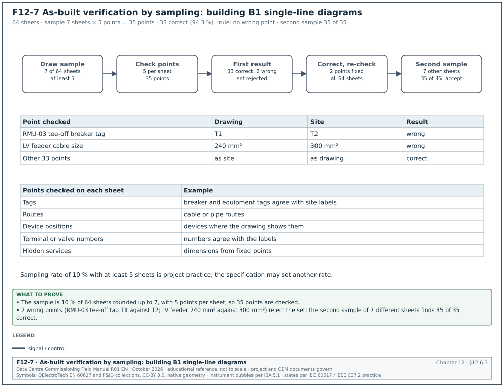
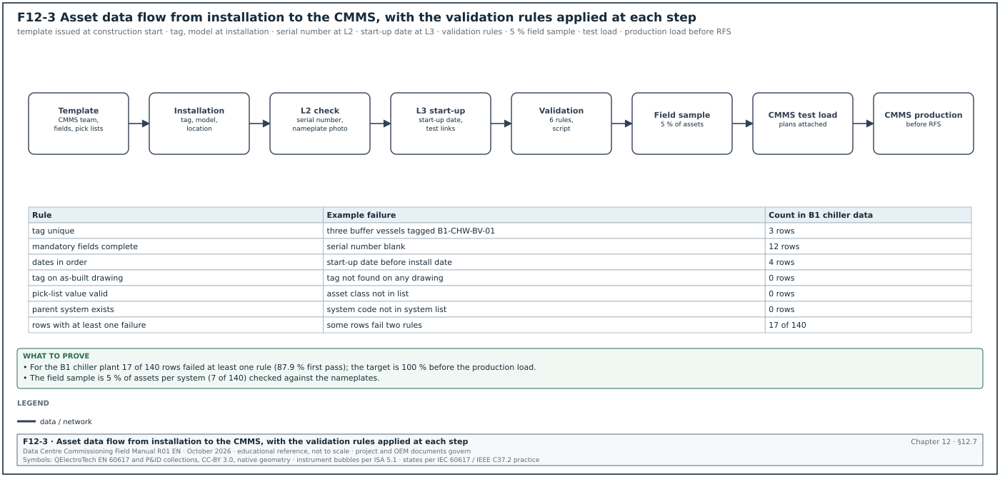
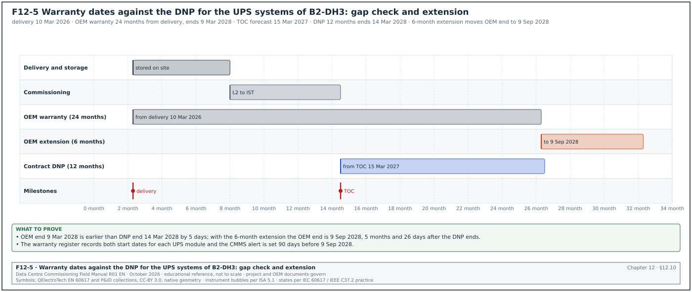
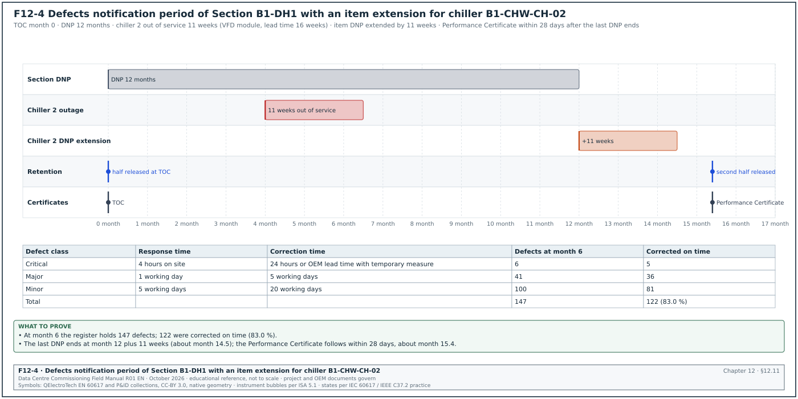

12.0Scope of this chapter
This chapter describes how a data-centre building, hall or plant is handed over from the contractor to the owner and its operations team, and how the contract is closed after handover. It covers the completion terms in the common contract forms, the handover sequence, the turnover package, the operation and maintenance (O&M) manuals and the systems manual. It also covers the as-built and record documents, the asset data for the computerised maintenance management system (CMMS), spare parts and special tools, and training records. The last topics are warranties, the defects liability period (DLP), the final account and the Soft Landings aftercare. Chapter 09 gives the defect categories and closure evidence. Chapter 27 covers the CMMS and data-centre infrastructure management (DCIM) systems. Chapter 28 covers integrated systems testing (IST), which is the last test before ready for service.
- Completion terms. Mechanical completion, substantial or practical completion, taking-over under FIDIC 2017 clause 10, Completion under NEC4, ready for service (RFS) and ready for workload.
- Handover sequence. The gates, their records and their time limits, from the last level 4 (L4) commissioning test to the Performance Certificate or the Defects Certificate.
- Turnover package. The index per system, with a filled example for a chiller plant.
- O&M manuals and the systems manual. Content per Construction Specifications Institute (CSI) section 01 78 23 practice and ASHRAE Guideline 1.4-2019, the review procedure and the rejection reasons.
- As-built and record documents. Mark-up rules, revision rules, verification sampling and the CSI section 01 78 39 practice.
- Asset data for the CMMS. Asset register fields, tagging, the COBie worksheets and the data flow from the contractor to the CMMS.
- Spares, tools, training and warranties. Registers, fields and start-date rules.
- Defects liability period and contract close. Defects handling after handover, the Performance Certificate, retention release and the final account.
- Soft Landings and operations readiness. BSRIA BG 54/2018 phases and the aftercare plan.
Documents and standards used: FIDIC Conditions of Contract for Construction and for Plant and Design-Build (2017 editions) and NEC4 Engineering and Construction Contract. The chapter also uses CSI MasterFormat sections 01 78 23, 01 78 39 and 01 79 00 as used in owner specifications, ASHRAE Guideline 0-2019 and ASHRAE Guideline 1.4-2019. It also uses BSRIA BG 54/2018 Soft Landings Framework, COBie, BS EN ISO 19650-4:2022 (which replaced BS 1192-4:2014) and Uptime Institute Tier Standard: Operational Sustainability. Further sources are Permenaker 12/2015, the regulation (Permen) 10/2021 of the Kementerian Energi dan Sumber Daya Mineral (ESDM) and the MSC-1 case ledger.
12.1Completion terms and what each one means


12.1.1Why the terms matter
A data-centre building passes through several "complete" states, and each state has a different legal and practical meaning. The contract decides when the risk and care of the works pass to the owner, when the defects period starts, when liquidated damages stop and when part of the retention is released. The operations team decides when it accepts responsibility for running the plant. The customer decides when it puts information technology (IT) load in the hall. Define each term in the contract and in the commissioning plan. Without these definitions the owner can take over a hall that is not ready, or the contractor can claim completion of a hall that the owner cannot use.
| Term | Defined by | Meaning on a data-centre campus | Typical record |
|---|---|---|---|
| Mechanical completion | Project specification | Installation complete and commissioning level 2 (L2) checklists signed for a system; ready for energisation or start-up | Mechanical completion certificate per system |
| Substantial or practical completion | Contract (form-specific term) | The works can be used for their intended purpose; only minor work and minor defects remain | Practical completion certificate |
| Taking-over | FIDIC 2017 clause 10 | The Employer takes over the Works or a Section; the Defects Notification Period (DNP) starts | Taking-Over Certificate (TOC) |
| Completion | NEC4 ECC clause 11.2(2) | The Contractor has done all the work the Scope requires by the Completion Date and corrected the notified Defects that would stop the Client using the works | Completion certificate by the Project Manager |
| Ready for service (RFS) | Owner programme | The hall has passed level 5 (L5) IST, the operations team has accepted it, and it can receive IT equipment | RFS certificate |
| Ready for workload | Owner and customer | Customer IT equipment is installed and the hall carries production load | Customer acceptance |
| Defects certificate or Performance Certificate | NEC4 clause 44.3 or FIDIC clause 11.9 | The defects period has ended and all notified defects are corrected | Defects Certificate or Performance Certificate |
12.1.2Taking-over under FIDIC 2017 clause 10
The FIDIC 2017 Conditions of Contract for Construction (Red Book) and for Plant and Design-Build (Yellow Book) set the taking-over process in clause 10. The steps below follow sub-clause 10.1 as quoted in Fenwick Elliott commentary on the 2017 forms. The Particular Conditions of a contract may change the time periods.
- Application. The Contractor may apply for a Taking-Over Certificate by a Notice to the Engineer. The Notice is given not more than 14 days before the Works or Section will, in the Contractor's opinion, be complete and ready for taking over.
- Engineer's response. Within 28 days of the application, the Engineer issues the TOC stating the completion date, or rejects the application with reasons and the work needed.
- Conditions for issue. The Works or Section are complete except for minor outstanding work and defects that do not substantially affect their use. The Tests on Completion are passed. The documents required by the contract (as-built records and O&M manuals under the design-build forms) are submitted (confirm the document conditions against FIDIC 2017 sub-clause 10.1 and the Contractor's Documents sub-clauses of the form used: 4.4 in the Red Book, clause 5 in the Yellow Book).
- Sections and parts. The Employer can take over a Section named in the Contract Data, or a part of the Works. On a campus, the contract defines each building and each data hall as a Section. Hall 1 can then be taken over while hall 2 is still under test.
- Effect. On taking over, the care of the Works or Section passes to the Employer, delay damages for that Section stop, and the DNP for that Section starts.
Check: On a campus, each data hall is a separate Section in the Contract Data. If the contract names only the whole building, the owner cannot take over hall 1 for a customer without a contract variation. The DNP of hall 1 then cannot start before the whole building is complete.
12.1.3Completion under NEC4
The NEC4 Engineering and Construction Contract (ECC) defines Completion in clause 11.2(2). Commentary from law firms and from the NEC website states the effect.
- Definition. Completion is when the Contractor has done all the work that the Scope states is to be done by the Completion Date. The Contractor must also have corrected the notified Defects that would have prevented the Client from using the works or others from doing their work.
- Decision. The Project Manager decides the date of Completion and certifies Completion within one week of Completion (NEC4 ECC clause 30.2, as summarised in Civil Engineering Contractors Association (CECA) NEC Bulletin No. 68, August 2026).
- Defects date and defect correction period. The defects date is stated in the Contract Data (often 52 weeks after Completion). A Defect notified before Completion has its defect correction period starting at Completion; a Defect notified after Completion has its period starting at the notification (clause 44.2 per commentary).
- Defects Certificate. The Supervisor issues the Defects Certificate at the later of the defects date and the end of the last defect correction period (NEC4 ECC clause 44.3, as cited in Fenwick Elliott's commentary). The certificate lists the notified defects that are not corrected, or states that none are outstanding.
- Scope wording. The Scope must state what is "to be done by the Completion Date". For a data-centre hall, the Scope lists the L5 IST, the turnover package, the training and the asset data as Completion requirements.
12.1.4Ready for service and ready for workload
Figure F12-6 shows the RFS conditions of hall B1-DH1 two weeks before RFS.
Ready for service is not a contract term in FIDIC or NEC4. It is an owner programme milestone. Hyperscale programmes define RFS for each data hall with a written list of conditions.
| RFS condition | Record | Owner of the record |
|---|---|---|
| All L4 tests passed for systems serving the hall | Test register extract | Commissioning manager (CxM) |
| L5 IST passed (in the MSC-1 worked example, 5 days per hall) | IST report signed | CxM |
| No open category A issue; category B issues accepted by operations | Issues log extract and acceptance list | CxM and data centre operations (DCOps) lead |
| Statutory certificates for the scope: certificate of operation worthiness, Sertifikat Laik Operasi (SLO), for the electrical installation, fire system acceptance, building function certificate where required | Certificates | Owner permitting lead |
| Turnover package accepted for the systems serving the hall | Turnover package acceptance sheet | DCOps lead |
| Asset data loaded in the CMMS and maintenance plans active | CMMS export and plan list | CMMS administrator |
| Operations staff trained and authorised | Training records and authorisation register | DCOps lead |
| Spares and special tools received | Spares receipt record | DCOps lead |
| Live access control and permit system transferred to operations | Transfer record | DCOps lead |
| Monitoring active: alarms of the building management system (BMS), the electrical power monitoring system (EPMS) and DCIM routed to the operations centre | Alarm routing test record | Controls and EPMS leads |
Worked example: RFS dates for building B1 of the MSC-1 campus. In the MSC-1 worked example, the target for RFS of building 1 is month 14 from the start of construction. The three halls of B1 have 12 MW of IT load each. The CxM plans IST for B1-DH1 in weeks 52 to 53 of the programme (5 days) and the turnover package acceptance in week 53. CMMS loading is planned in weeks 51 to 53 and training in weeks 48 to 52. RFS for DH1 is planned for the end of week 54, which leaves one week between the end of IST and RFS for the issues raised in IST. DH2 and DH3 follow at 3-week intervals (weeks 57 and 60). The contract names each hall as a Section, so the TOC of DH1 can be issued in week 54 and its DNP starts on that date. The contractor keeps the care of DH2 and DH3 until their own TOCs. On most programmes a 3-week interval between halls is the minimum because the same IST team, load banks and heat emulators move from hall to hall.
12.2The handover sequence


12.2.1Gates from L4 to the end of the defects period
Each gate of the handover sequence has an entry condition, an owner, a time limit and a record. Figure F12-1 shows the sequence.
| Gate | Entry condition | Owner | Time limit | Record |
|---|---|---|---|---|
| G1 Mechanical completion per system | Installation complete, L2 checklists signed | Contractor, verified by CxM | before energisation or start-up | Mechanical completion certificate |
| G2 Functional completion per system | Level 3 (L3) and L4 tests passed | CxM | before IST | Test register |
| G3 Turnover package submitted | Package complete per the index | Contractor | 30 days before the planned TOC | Transmittal |
| G4 Turnover package reviewed | Review comments issued | CxM and operations | 10 working days after submission | Review comment sheet |
| G5 IST passed | All scenarios passed | CxM | IST window | IST report |
| G6 Handover readiness review | RFS conditions in 12.1.4 met or accepted | Owner project director | 5 working days before TOC | Readiness review minutes |
| G7 Taking-over or Completion | Contract conditions met | Engineer or Project Manager | 28 days after application (FIDIC practice) | TOC or Completion certificate |
| G8 RFS | Operations acceptance | DCOps lead | same day as G7 or later | RFS certificate |
| G9 Defects period | Defects notified and corrected | Owner and contractor | DNP length, often 12 months | Defects register |
| G10 Performance or Defects Certificate | DNP ended, defects corrected | Engineer or Supervisor | 28 days after the last DNP ends (FIDIC practice) | Performance Certificate |
| G11 Final account | Payments agreed | Quantity surveyors | contract period after G10 | Final account statement |
12.2.2The handover readiness review meeting
Purpose: To confirm that a building, hall or plant is ready for taking-over and RFS, and to list the items that remain open with their owners and dates.
Trigger: The contractor's notice of intent to apply for taking-over, at least 15 working days before the planned date.
Owner: The owner's project director chairs; the CxM presents the status.
Steps:
- Review the RFS conditions. The CxM reads each condition in 12.1.4 with its record.
- Review the open issues. The CxM presents the open issues for the scope by category. Category A issues block. Category B issues need operations acceptance with a closure date. Category C issues are attached to the TOC as the list of minor outstanding work.
- Review the turnover package. The DCOps lead confirms the status of the package review (12.3).
- Review statutory items. The permitting lead confirms the SLO and the fire system acceptance.
- Decide. The chair decides: ready, ready with conditions, or not ready.
- Issue the outstanding works list. The list of minor outstanding work with dates is attached to the TOC application.
Records: Readiness review minutes, outstanding works list, operations acceptance list for category B issues.
12.3The turnover package


12.3.1What a turnover package is
The turnover package is the set of documents and data that the contractor hands to the owner for each system. The operations team uses it to run, maintain, repair and modify the system. It is assembled per system (for example "chilled-water plant, building B1") because the operations team works by system. A package assembled per subcontractor is returned. The index below is the standard structure used on hyperscale programmes (project practice; the contract specification governs). Figure F12-2 shows the tree.
| Section | Content | Format |
|---|---|---|
| 1 Index and contacts | Package index, contractor and original equipment manufacturer (OEM) contacts, emergency contacts | |
| 2 System description | Short system description, design intent, sequence of operation summary | PDF, from the systems manual |
| 3 As-built drawings | Single-line diagrams, schematics, layouts, piping and instrumentation diagrams (P&IDs), control drawings | PDF and native computer-aided design (CAD) or building information modelling (BIM) files |
| 4 Equipment data | Approved submittals, datasheets, nameplate photos | PDF and photos |
| 5 O&M manuals | OEM manuals and the contractor's system O&M manual | PDF, searchable |
| 6 Test records | Factory acceptance test (FAT) records, L2 checklists, L3 and L4 test reports, IST extract, calibration certificates | PDF from the Cx system |
| 7 Statutory certificates | SLO, pressure vessel certificates, fire acceptance, lifting equipment certificates | |
| 8 Asset data | Asset register and COBie or CMMS template file | XLSX or COBie |
| 9 Spares and tools | Spares list, special tools list, receipt records | XLSX and PDF |
| 10 Warranties | Warranty certificates and warranty register | PDF and XLSX |
| 11 Training | Training plan, attendance sheets, assessments, recordings | PDF and video |
| 12 Software and configuration | Controller programs, configuration backups, licence certificates, passwords handed over under control | Native files, encrypted |
| 13 Open items | Open issues, outstanding works, deferred tests | XLSX |
12.3.2Worked example: turnover package for the chiller plant of building B1
Figure F12-2 shows the 13 sections of this package with their status after the first review.
Worked example: Turnover package TP-B1-CHW-01 for the chilled water (CHW) plant of building B1. In the MSC-1 worked example, the campus cold-loop duty for the air halls is 36.5 MW over 4 buildings, which is about 9.1 MW per building. The chilled water runs at 18 °C supply and 24 °C return. For this example the B1 plant has 5 chillers of 2.5 MW (4 duty and 1 standby; example value, the same arrangement as the B2 staging script in 03.9.3). The warm-loop trim chillers of chapter 18 are a separate plant of 8 duty and 1 standby units of 2,500 kW. The B1 plant also has 5 primary pumps, 2 pressurisation units, 2 side-stream filters, 1 chemical dosing set and 3 buffer vessels. It also has 64 motorised valves, 38 flow, pressure and temperature sensors, 2 chiller plant controllers and 1 chiller plant manager panel. The figures are example data.
| Section | Items expected | Items received | Accepted | Rejected | Notes |
|---|---|---|---|---|---|
| 1 Index and contacts | 1 | 1 | 1 | 0 | |
| 2 System description | 1 | 1 | 1 | 0 | from systems manual chapter CHW |
| 3 As-built drawings | 46 | 46 | 41 | 5 | 5 P&ID sheets show valve tags not matching the labels |
| 4 Equipment data | 21 equipment types | 21 | 21 | 0 | |
| 5 O&M manuals | 12 OEM manuals plus 1 system manual | 13 | 11 | 2 | chiller manual is the generic model range; pump manual has no parts list |
| 6 Test records | 1,180 records | 1,174 | 1,174 | 0 | 6 L3 records missing for valves V-B1-CHW-055 to 060 |
| 7 Statutory certificates | 8 (pressure vessels and buffer vessels) | 8 | 8 | 0 | |
| 8 Asset data | 140 assets | 140 rows | 128 | 12 | 12 rows missing serial numbers |
| 9 Spares and tools | 2 lists | 2 | 2 | 0 | |
| 10 Warranties | 21 certificates | 19 | 19 | 0 | 2 missing (dosing set, pressurisation units) |
| 11 Training | 3 sessions | 3 | 3 | 0 | |
| 12 Software and configuration | 3 controller backups | 2 | 2 | 0 | plant manager backup missing |
| 13 Open items | 1 list | 1 | 1 | 0 | 17 open issues, 0 category A |
The package acceptance rate is calculated on the 13 sections. Seven sections are fully accepted. Sections 3, 5, 6, 8, 10 and 12 have gaps: sections 6, 10 and 12 have missing items, and sections 3, 5 and 8 have rejected items. The CxM issues review sheet RS-TP-B1-CHW-01 with 7 actions. The first four actions are to re-issue 5 P&ID sheets, replace the chiller manual with the model-specific manual, add the pump parts list and issue the 6 missing L3 records. The last three are to complete 12 serial numbers, issue 2 warranty certificates and issue the plant manager backup. For the 7 actions the contractor has 10 working days. The package is not accepted until all 13 sections are complete. The DCOps lead accepts the chiller plant for IST on the condition that the 7 actions close before the TOC.
12.3.3Turnover package review procedure
Trigger: Turnover package transmittal from the contractor.
Owner: CxM coordinates; the DCOps lead and the discipline reviewers review.
Steps:
- Completeness check. Within 2 working days the document controller checks the package against the index and returns incomplete packages without review.
- Technical review. Within 10 working days of acceptance for review, the reviewers check content: correct models, correct tags, readable scans, native files present.
- Comment sheet. The CxM issues one consolidated comment sheet with a status per section: accepted, accepted with comments, rejected.
- Resubmission. The contractor resubmits rejected sections within 10 working days.
- Final acceptance. The DCOps lead signs the turnover package acceptance sheet.
| Review status code | Meaning | Next step |
|---|---|---|
| A Accepted | Content complete and correct | none |
| B Accepted with comments | Minor corrections, no resubmission review needed | contractor corrects and issues for record |
| C Rejected | Missing or wrong content | contractor resubmits for review |
| D Not reviewed | Package incomplete at the completeness check | contractor completes and resubmits |
12.4O&M manuals
12.4.1Purpose and structure
The O&M manual gives the operations and maintenance staff the information to operate, maintain, repair and replace the installed equipment. CSI MasterFormat section 01 78 23 Operation and Maintenance Data is the US specification section that sets the requirements. Owner specifications based on it require a title page and a table of contents, volume labels for multi-volume manuals, and servicing and lubrication schedules. They also require valve tag charts keyed to the flow and control diagrams, and review by the architect and the commissioning authority. These requirements are taken from the Yale University and City of San Diego 01 78 23 sections listed in 12.16; the project specification governs.
| O&M manual part | Content | Check by the reviewer |
|---|---|---|
| Title page and contents | Project, system, building, revision, contractor, date | Matches the system and the turnover index |
| Contacts | Contractor, subcontractor, OEM service contacts with phone numbers and response times | Phone numbers tested on a sample |
| System description | Function, design conditions, capacity, operating modes | Agrees with the systems manual and the basis of design (BOD) |
| Equipment list | Tag, description, manufacturer, model, serial number, location | Agrees with the asset register |
| Operating procedures | Start-up, normal operation, shut-down, emergency operation, seasonal changes | Steps match the installed controls |
| Maintenance procedures | Preventive maintenance tasks with frequency, labour, tools and materials | Frequencies match the OEM and the warranty conditions |
| Servicing and lubrication schedules | Lubricant types, quantities, intervals | OEM values |
| Fault finding | Alarm list, causes, actions | Alarm list matches the BMS points list |
| Parts lists | Part numbers, recommended spares | Agrees with the spares list |
| Drawings | As-built schematics, wiring, valve tag charts | Same revision as the as-built set |
| Test reports and certificates | Factory and site test reports, calibration certificates | Present and signed |
| Warranty | Warranty certificate, conditions, start date | Agrees with the warranty register |
12.4.2Common rejection reasons for O&M manuals
- Generic manuals. The OEM manual covers a whole model range with no indication of the installed model and options. The reviewer asks for the model-specific manual or a marked-up range manual.
- Missing installed data. Serial numbers, set points and installed options are not stated.
- Not searchable. Scanned images without text recognition. The specification requires searchable PDF.
- Wrong language. On a Jakarta campus, the owner may require English and Indonesian for safety instructions. The language requirement is stated in the O&M data section of the contract specification.
- No maintenance frequency. Maintenance tasks are listed without frequency or time.
- Mismatch with the as-built drawings. Tags or wiring numbers differ from the as-built set.
- Missing parts list. Parts lists are absent or have no part numbers.
Worked example: O&M manual review statistics for building B1 at week 50. The contractor submitted 186 O&M manuals (OEM and system manuals). At the first review, 104 were accepted (status A or B) and 82 were rejected (status C). The first-pass acceptance rate is 104 ÷ 186 = 55.9 %. The rejection reasons for the 82 manuals were: generic manuals 31, missing installed data 22, scanned without text recognition 11, no maintenance frequency 9, missing parts list 6, mismatch with as-built drawings 3. The CxM sends the reasons table to the contractor with the rule that each resubmission must answer the comment sheet line by line. At the second review, 71 of the 82 resubmitted manuals were accepted. The total accepted is 175 of 186 (94.1 %), and the 11 remaining manuals are on the TOC outstanding list with a 20-working-day due date.
12.5The systems manual
12.5.1What a systems manual is and how it differs from O&M manuals
The systems manual is a commissioning document that explains how the systems work together, why they were designed as they are, and how to operate them to meet the owner's project requirements. ASHRAE Guideline 0-2019 includes the systems manual as a commissioning process deliverable. ASHRAE Guideline 1.4-2019 gives the procedures for preparing facility systems manuals (Section 4 covers systems manual content and organisation, and a 2024 addendum expands section 4.1). The O&M manuals describe equipment; the systems manual describes systems and the facility.
| Systems manual part (common outline) | Content for a data-centre building |
|---|---|
| Executive summary | Building purpose, capacity (in the MSC-1 worked example, 36 MW IT per building), redundancy concept, contacts |
| Facility design and construction | Owner's project requirements (OPR), BOD, design narratives, main design changes during construction |
| Building and systems information | System descriptions, single-line and flow diagrams, sequences of operation, set points, operating limits |
| Facility operations | Operating procedures by mode: normal, maintenance, failure, emergency; method of procedure (MOP) and emergency operating procedure (EOP) index |
| Training | Training plan, records and materials |
| Commissioning project report | Cx plan, issues log summary, test summary, IST report, lessons learned |
Source: outline from the Building Commissioning Association (BCxA) summary of ASHRAE Guideline 1.4 (confirm the part names against Section 4, Systems Manual Content and Organization, of ASHRAE Guideline 1.4-2019 and its Addendum a, 2024).
12.5.2Who writes which part
| Part | Writer | Reviewer | Due |
|---|---|---|---|
| OPR and BOD | Owner and designer | CxM | design phase |
| System descriptions and sequences | Designer, controls contractor | CxM, operations | before L4 |
| Operating procedures, MOP and EOP index | Operations team with contractor input | CxM | before IST |
| Commissioning project report | CxM | Owner | 30 days after TOC |
| Assembly of the manual | CxM | DCOps lead | at TOC, final 30 days after |
12.6As-built drawings and record documents
12.6.1Definitions
| Document | Meaning | Who produces it |
|---|---|---|
| Red-line mark-up | Site set of construction drawings marked by hand or in a PDF tool with every change made during installation | Installing subcontractor, kept current weekly |
| As-built drawings | Drawings updated from the mark-ups, showing the installation as built | Contractor (or designer if the contract says so) |
| Record drawings | As-built drawings accepted by the owner as the formal record | Contractor issues; owner accepts |
| Record documents (CSI 01 78 39) | Record drawings, record specifications, record product data and record samples | Contractor |
| BIM record model | Model updated to the as-built state with asset data | Contractor or BIM consultant |
12.6.2Rules for mark-ups and as-built drawings
- Keep the mark-up set current. The site mark-up set is updated within 5 working days of each change and checked monthly by the contractor's quality team.
- Use colours consistently. Red for additions, green for deletions, blue for notes (common practice; follow the project CAD standard).
- Record the reason. Each change references its request for information (RFI), site instruction or variation number (chapters 05 and 08).
- Show hidden services. Buried cables, embedded conduits and services above ceilings or below raised floors are dimensioned from fixed points.
- Update tags and labels. Equipment tags on the drawings agree with the labels on site and with the asset register.
- Revise and issue. As-built drawings carry a revision letter or number and the status "As built". The title block states the date of the site survey.
- Issue native files. CAD or BIM native files are issued with the PDF set, with fonts and references bound.
12.6.3Verification of as-built drawings by sampling
Figure F12-7 shows the sampling check of the building B1 single-line diagrams: the sample size, the 35 points checked, the rejection and the second sample.


The CxM and the operations team verify a sample of as-built drawings against the installation before acceptance. A common rule is a sample of 10 % of the sheets per system, with at least 5 sheets (project practice; the specification may set another rate). Each sampled sheet is checked at 5 points: tags, cable or pipe routes, device positions, terminal or valve numbers, and dimensions of hidden services.
Worked example: As-built verification for the 20 kV and low-voltage (LV) single-line diagrams of building B1. The as-built set has 64 electrical schematic sheets. The sample is 10 % of 64 = 6.4, rounded up to 7 sheets. The checker checks 5 points on each sheet, which is 35 points. The result is 33 points correct and 2 wrong. The breaker tag on the tee-off of ring main unit RMU-03 reads T1 on the drawing and T2 on site. A cable size on an LV feeder reads 240 mm² on the drawing and 300 mm² on site. The point accuracy is 33 ÷ 35 = 94.3 %. The acceptance rule in this example is no wrong point on a single-line diagram, because the single-line diagram is used to write switching programmes (chapter 10). The set is rejected. The contractor corrects the 2 points and re-checks all 64 sheets against the site labels, and a second sample of 7 different sheets finds 35 of 35 points correct.
12.7Asset data for the CMMS


12.7.1Why the asset data must be ready before handover
The CMMS holds the asset register, the maintenance plans, the work orders and the spares stock. If the asset data is loaded after handover, the operations team runs the plant for weeks without planned maintenance and without a record of the warranty start dates. Hyperscale programmes collect the asset data during installation and L2, validate it during L3 and L4, and load it into the CMMS before RFS. Chapter 27 describes the CMMS itself.
12.7.2Asset register fields
| Field | Type | Example value | Source |
|---|---|---|---|
| Asset tag | text, unique | B1-CHW-CH-03 | Tagging standard |
| Description | text | Chiller 3, water-cooled, 2.5 MW (example value, 12.3.2) | Submittal |
| Asset class | pick list | Chiller | Owner classification |
| Parent system | text | B1-CHW (chilled-water plant B1) | System list |
| Location | building, level, room | B1, roof level, chiller hall | Layout drawing |
| Manufacturer | text | (OEM name) | Nameplate |
| Model number | text | (model) | Nameplate |
| Serial number | text | (serial) | Nameplate photo |
| Capacity and rating | number and unit | 2,500 kW | Datasheet |
| Install date | date | 12 Jun 2026 | L2 checklist |
| Start-up date | date | 2 Sep 2026 | L3 test record |
| Warranty start, warranty end | date | 15 Feb 2027, 14 Feb 2029 | Warranty register |
| Maintenance plan reference | text | PM-CHILLER-Q, PM-CHILLER-A | CMMS job plans |
| Criticality | pick list | 1 (loss affects IT load) | Owner criticality rules |
| Spares reference | text | SPL-B1-CHW-01 | Spares list |
| Document links | URL list | O&M manual, datasheet, test reports | Common data environment (CDE) |
12.7.3COBie worksheets
COBie (Construction Operations Building information exchange) is a spreadsheet format for handing over asset information. The code of practice BS 1192-4:2014 is withdrawn and BS EN ISO 19650-4:2022 is listed as its successor in the catalogue of the British Standards Institution (BSI). The worksheets of the COBie format and their use on a data-centre handover are listed below (confirm the worksheet list against the COBie version named in the exchange information requirements, for example COBie 2.4 of the US National BIM Standard, NBIMS-US V3).
| COBie worksheet | Content | Data-centre example |
|---|---|---|
| Contact | People and companies | OEM service contacts |
| Facility | The building | B1 |
| Floor | Levels | Ground, level 1, roof |
| Space | Rooms | B1-DH2, MVR-1, chiller hall |
| Zone | Groups of spaces | Data hall zone 3, fire zone 12 |
| Type | Equipment types with common data | Chiller model, computer room air handler (CRAH) model, uninterruptible power supply (UPS) model |
| Component | Individual assets | B1-CHW-CH-03 with serial number |
| System | Groups of components | B1-CHW plant |
| Assembly | Parts of a type | Not used on most programmes |
| Connection | Logical connections | Chiller to pump |
| Spare | Spare parts by type | Compressor oil filter |
| Resource | Tools and materials | Refrigerant recovery unit |
| Job | Maintenance tasks by type | Quarterly chiller inspection |
| Impact | Environmental data | Not used on most programmes |
| Document | Document references | O&M manual link |
| Attribute | Extra properties | Refrigerant type and charge |
| Coordinate | Locations | Not used on most programmes |
| Issue | Open issues | Not used for handover on most programmes |
| PickLists | Allowed values | Asset classes |
12.7.4Data flow and validation
Figure F12-3 shows the data flow and the validation rules.
- Template issue. The owner's CMMS team issues the asset data template with field rules and pick lists at the start of construction.
- Collection during installation. The installing subcontractor fills tag, description, location, manufacturer and model at installation, and the serial number from the nameplate photo at L2.
- Start-up data. The commissioning team adds start-up dates and test record links at L3.
- Validation. The CMMS team runs validation rules: unique tags, tags found in the as-built drawings, mandatory fields complete, dates in order (install date before start-up date before warranty end), pick-list values valid.
- Field sample check. The operations team checks a sample of 5 % of assets per system on site against the nameplates.
- Load to a test environment. The data is loaded to a CMMS test environment and the maintenance plans are attached.
- Load to production. After acceptance, the data is loaded to production before RFS.
| Validation rule | Example failure | Action |
|---|---|---|
| Tag is unique | Two rows with B1-CHW-P-03 | Contractor corrects |
| Tag exists on the as-built drawing | Asset tag not on any drawing | Check drawing or asset |
| Mandatory fields complete | Serial number blank | Contractor completes from nameplate photo |
| Dates in order | Start-up date before install date | Contractor corrects |
| Pick-list value valid | Asset class "chiller unit" not in list | Map to "Chiller" |
| Parent system exists | System B1-CHW-2 not in system list | Correct the parent |
Worked example: Asset data validation for the B1 chiller plant. The contractor submits 140 asset rows. The validation script finds 12 rows with a blank serial number and 3 rows with duplicate tags (the three buffer vessels all tagged B1-CHW-BV-01). It also finds 4 rows with a start-up date earlier than the install date. Some rows have more than one failure; the number of rows with at least one failure is 17. The first-pass data quality is (140 − 17) ÷ 140 = 87.9 %. The target in this example is 100 % of rows passing before the load to production. After correction, a field sample of 5 % (7 assets) finds 1 serial number that differs from the nameplate by one digit. The DCOps lead asks for a full serial number check against the nameplate photos for the 12 chillers, pumps and pressurisation units, which finds no further error.
12.8Spare parts and special tools
12.8.1Categories of spares
| Category | Purpose | Who decides the list | Example for a chiller plant |
|---|---|---|---|
| Commissioning spares | Used during start-up and testing, consumed before handover | Contractor and OEM | Filters, gaskets, fuses used during L3 |
| Contract spares (operational spares) | Supplied under the contract for the first period of operation | Specification | Oil filters, belts, contactors, sensors for 2 years |
| Strategic or critical spares | Long-lead items whose failure would remove redundancy for a long time | Owner, from a criticality review | Compressor motor, variable-frequency drive (VFD) power module, controller board |
| Consumables | Items used in routine maintenance | Operations | Lubricants, cleaning materials |
12.8.2Spares and tools register fields
| Field | Type | Example |
|---|---|---|
| Spares list number | text | SPL-B1-CHW-01 |
| Item number | text | 014 |
| Description | text | VFD power module for chiller compressor |
| Manufacturer part number | text | (OEM part number) |
| Used on asset types | text list | Chiller model X, 5 units |
| Quantity required, delivered | numbers | 1, 1 |
| Lead time if ordered new | weeks | 16 |
| Storage location | text | B1 spares store, rack 4, shelf 2 |
| Storage condition | text | dry, 15 °C to 30 °C, anti-static bag |
| Shelf life or expiry | date | not applicable |
| Received by, date | name and date | Operations storekeeper, 18 Jan 2027 |
| Delivery note | text | DN-44817 |
12.8.3Special tools
Special tools are tools that the OEM requires for maintenance and that are not in a normal tool kit. Examples are racking handles for withdrawable breakers, earth switch operating handles, software licences and cables for controller access, chiller service software, torque tools with specific heads, lifting beams for UPS modules. The contract lists them per equipment type. The receipt record names each tool, its serial number where it has one, and its storage location. Software tools and licences are handed over with the licence certificate and the named licence holder, because a licence registered to the contractor's engineer stops working when that person leaves.
Worked example: Spares receipt for the B1 chiller plant. The specification requires 2 years of operational spares and the owner's criticality review adds 3 strategic items. The spares list SPL-B1-CHW-01 has 38 line items with 214 pieces in total. At the receipt check, 35 lines are complete and 2 lines are short (6 of 10 oil filters, 2 of 4 temperature sensors). One strategic item, the VFD power module with a lead time of 16 weeks, has not arrived. The storekeeper signs the receipt for 35 lines and records 3 open lines on the TOC outstanding list. Because the strategic module has a 16-week lead time, the DCOps lead classifies its absence as a category B issue with a closure date. The contractor provides a written confirmation of the shipping date.
12.9Training
12.9.1Training plan
Training transfers the knowledge to operate and maintain the systems from the contractor and the OEMs to the operations team. Owner specifications based on CSI section 01 79 00 Demonstration and Training require instruction on emergency shut-down, operation outside normal limits, and routine and preventive maintenance. They also require a factory-authorised instructor and training records such as agendas, schedules, sign-in sheets, handouts and recordings. The Yale University section 01 79 00 (September 2025) states: "Do not submit instruction program until operation and maintenance data have been reviewed and approved by Architect."
| Training plan field | Type | Example |
|---|---|---|
| Training module ID | text | TRN-B1-CHW-02 |
| System | text | Chilled-water plant B1 |
| Title | text | Chiller operation, alarms and emergency shut-down |
| Audience | pick list | Shift engineers, maintenance technicians |
| Instructor and qualification | name and text | OEM service engineer, factory-authorised |
| Prerequisites | text | O&M manual accepted, equipment operating |
| Duration | hours | 6 hours (3 classroom, 3 on the plant) |
| Learning objectives | list | start, stop, change duty, respond to 10 alarms, emergency shut-down |
| Materials | list | Slides, O&M manual extract, checklist |
| Assessment | text | Practical demonstration with a checklist, pass mark 80 % |
| Recording | yes or no | yes, video stored in the CDE |
12.9.2Training procedure
- Plan. The contractor submits the training plan 60 days before the first session. The DCOps lead approves the audience and the dates.
- Prepare. The instructor issues the materials 10 working days before the session. The CxM checks that the materials match the installed equipment.
- Deliver. The session runs in two parts: classroom and on the plant. Attendees sign the attendance sheet with name, role and time in and out.
- Assess. Each attendee completes the practical assessment. Results are recorded per person.
- Record. The contractor issues the training record within 5 working days: attendance, assessment results, materials, recording link.
- Repeat for shifts. Sessions repeat so that each shift team attends. On a 24/7 data centre with 4 or 5 shift teams, critical modules run 4 or 5 times, or are recorded and followed by a practical session per shift.
12.9.3Training record fields
| Field | Example |
|---|---|
| Session ID | TRN-B1-CHW-02-S3 |
| Date and time | 14 Jan 2027, 08:00 to 14:00 |
| Instructor | OEM service engineer |
| Attendees | 7 names with roles and shift team |
| Attendance time | 7 attendees present for at least 90 % of the session |
| Assessment results | 6 passed (82 % to 96 %), 1 failed (70 %) |
| Follow-up | Failed attendee booked on session S4 |
| Recording | link in CDE folder Training/B1/CHW |
Worked example: Training hours for building B1. The training plan has 42 modules. They cover medium-voltage (MV) and LV electrical, generators, UPS and batteries, chilled water, coolant distribution units (CDU) and technology cooling. Further modules cover CRAH, fire detection and suppression interfaces, BMS, EPMS and the operational technology (OT) network. The average module is 5 hours, and the operations team of B1 has 5 shift teams of 6 engineers plus a maintenance team of 10. Critical modules (18 of 42) run once per shift team (5 times); the other 24 modules run twice and are recorded. Delivered hours = 18 × 5 × 5 + 24 × 2 × 5 = 450 + 240 = 690 instructor hours. Attendee hours for the critical modules = 18 × 5 hours × 30 shift engineers = 2,700 hours. The training must finish before IST of DH1 so that the shift engineers can operate the plant during IST. This places the start of training at least 6 weeks before IST at 115 instructor hours per week.
12.10Warranties


12.10.1Warranty register
| Field | Type | Example |
|---|---|---|
| Warranty ID | text | WAR-B1-CHW-CH-03 |
| Asset tag or system | text | B1-CHW-CH-03 |
| Supplier and OEM | text | Mechanical subcontractor; chiller OEM |
| Warranty type | pick list | equipment, parts and labour, extended, performance, workmanship |
| Start trigger | pick list | taking-over, start-up, delivery, invoice date |
| Start date | date | 15 Feb 2027 |
| Duration | months | 24 |
| End date | date | 14 Feb 2029 |
| Conditions | text | OEM-authorised maintenance every quarter, records kept |
| Exclusions | text | Water treatment damage, refrigerant leaks caused by others |
| Claim contact | text | OEM service desk, phone and email |
| Certificate reference | text | WC-77213 |
12.10.2Start date rules
Figure F12-5 shows the warranty and DNP dates of the worked example below.
The start date is a common cause of warranty disputes. The OEM warranty often starts at delivery or start-up, while the contract makes the contractor responsible for defects from taking-over. If the equipment was delivered 9 months before taking-over and the OEM warranty is 12 months from delivery, only 3 months of OEM warranty remain at handover. The contract and the purchase orders must close this gap.
- Align OEM and contract periods. The purchase order requires the OEM warranty to start at taking-over of the Section. The other option is a fixed period after delivery that covers the longest expected storage and commissioning time plus the DNP.
- Record both dates. The warranty register records the OEM start date and the contract defects period start date.
- Keep the conditions. The operations team keeps the maintenance records that the warranty conditions require, for example quarterly OEM-authorised service.
- Claims during the DNP. During the DNP, defects are notified to the contractor under the contract; the contractor manages the OEM claim.
Worked example: Warranty gap for the UPS systems of building B2. The UPS modules for B2-DH3 were delivered on 10 Mar 2026 with a 24-month OEM warranty from delivery, so the OEM warranty ends on 9 Mar 2028. Taking-over of the DH3 Section is forecast for 15 Mar 2027, and the DNP is 12 months, ending on 14 Mar 2028. The OEM warranty ends 5 days before the end of the DNP. A 3-month delay to taking-over would create a gap of more than 3 months in which the contractor carries the defects risk without OEM cover. The CxM records the dates in the warranty register and raises the risk in the weekly report. The contractor buys a warranty extension of 6 months from the OEM for a fixed price, which moves the OEM end date to 9 Sep 2028. This covers the DNP with a margin of 5 months and 26 days (14 Mar 2028 to 9 Sep 2028).
12.10.3Setting warranty expiry alerts in the CMMS
- Load both dates. The CMMS administrator loads the OEM warranty start and end dates and the contract DNP dates for each asset from the warranty register.
- Set the alert. The CMMS raises an alert 90 days before each warranty end date and sends it to the maintenance planner.
- Inspect before expiry. The maintenance planner schedules an inspection of the asset 60 days before the end date, so that any defect is notified while the warranty is valid.
- Notify defects found. Defects found in the inspection are notified to the contractor (during the DNP) or to the OEM (after the DNP) before the end date.
- Record the result. The inspection record and any claim are linked to the asset in the CMMS.
12.10.4Warranty KPIs
The warranty key performance indicators (KPIs) are below.
| KPI | Definition | Target |
|---|---|---|
| Warranty certificates received | certificates received ÷ assets requiring one | 100 % at TOC |
| Warranty start dates recorded | assets with OEM start and contract start recorded ÷ assets | 100 % |
| Warranty claims open | claims not closed within the OEM response time | 0 |
| Warranty expiry alerts | CMMS alerts set 90 days before expiry | 100 % |
12.11The defects liability period


12.11.1What the DLP is
The defects liability period (DLP) is the period after taking-over or Completion during which the contractor must correct defects notified by the owner. FIDIC calls it the Defects Notification Period (DNP), and NEC4 calls it the period up to the defects date. Under FIDIC 2017 the DNP length is set in the Contract Data; where none is stated, it is 365 days. The Employer is entitled to an extension of the DNP for any part that cannot be used for its intended purpose because of a defect (sub-clause 11.3). In any case the extension cannot exceed two years after the DNP stated in the Contract Data. The Performance Certificate is issued within 28 days after the latest expiry of the DNPs, or as soon as the Contractor has completed all work and remedied all defects (sub-clause 11.9). These values come from commentary on the 2017 forms; the Particular Conditions may change them.
12.11.2Defects handling during the DLP
Trigger: The operations team finds a fault that is the contractor's responsibility: failed equipment, wrong installation, wrong configuration, or work that does not meet the specification.
Owner: The owner's handover manager notifies; the contractor corrects.
Steps:
- Record. The operations engineer raises a defect in the defects register with the asset tag, the symptom, photos, alarm records and the date found.
- Classify. The handover manager classifies the defect by its effect on operation: critical (redundancy lost or IT load at risk), major (degraded function), minor (no effect on function).
- Notify. The handover manager notifies the contractor in writing within 2 working days. The notice states the response time.
- Make safe. For a critical defect, the operations team makes the plant safe and restores redundancy by switching or isolation (chapter 10).
- Access and permit. The contractor works under the owner's live-site permit and change process, with a method of procedure (MOP).
- Correct and test. The contractor corrects the defect and repeats the test that proves the function (the L3 or L4 test step), witnessed by operations.
- Close. The handover manager closes the defect with the test record. Defects that are not corrected in the response time are corrected by the owner at the contractor's cost where the contract allows it.
| Defect class | Example | Response time (typical) | Correction time (typical) |
|---|---|---|---|
| Critical | UPS module fails and the block runs on reduced redundancy | 4 hours on site | 24 hours or the OEM part lead time with a temporary measure |
| Major | One CRAH fan fails, redundancy remains | 1 working day | 5 working days |
| Minor | Label missing, paint damage | 5 working days | 20 working days |
The response and correction times are project practice and must be written in the contract. Under NEC4 ECC the defect correction period is stated in Contract Data part one. FIDIC 2017 clause 11 requires remedy within a reasonable time, so hour-based response times go in the Particular Conditions or the Employer's Requirements. A defects period without written response times leads to disputes about delay in a live data centre.
12.11.3Defects register fields
Figure F12-4 shows the DNP of Section B1-DH1 with the item extension of the worked example below.
| Field | Type | Example |
|---|---|---|
| Defect ID | text | DLP-B1-0147 |
| Date found, date notified | date | 3 May 2027, 4 May 2027 |
| Asset tag | text | B1-DH2-CDU-07 |
| Description | text | CDU flow meter reads 12 % low against a clamp-on reference |
| Class | pick list | Major |
| Contract Section | text | Section B1-DH2 |
| Notified to | company | Mechanical subcontractor |
| Response due, correction due | date-time | 5 May 2027, 11 May 2027 |
| Corrected on | date | 10 May 2027 |
| Retest record | text | L4 step CDU-L4-07-12 repeated, pass |
| Status | pick list | open, corrected, closed, rejected |
| Effect on DNP | text | no extension (CDU remained usable) |
Worked example: DLP statistics for building B1 at month 6 of the DNP. The defects register holds 147 defects: 6 critical, 41 major and 100 minor. Corrected within the correction time: 5 of 6 critical, 36 of 41 major and 81 of 100 minor. The on-time correction rate is (5 + 36 + 81) ÷ 147 = 122 ÷ 147 = 83.0 %. The one late critical defect is a VFD module on chiller B1-CHW-CH-02 with a 16-week lead time. The chiller stayed out of service for 11 weeks with the standby chiller running. Under the FIDIC practice the owner notifies an extension of the DNP for chiller 2 by 11 weeks, because the chiller could not be used for its intended purpose. The extension applies to chiller 2 only. The rest of the Section keeps its original DNP. The DNP for the Section ends at month 12, and the DNP for chiller 2 ends at month 12 plus 11 weeks.
12.11.4Retention and the Performance Certificate
- Retention at taking-over. FIDIC 2017 sub-clause 14.9 releases the first half of the retention when the Taking-Over Certificate for the Works is issued, and the second half after the latest DNP expires. Under NEC4 secondary Option X16 the retention is halved only at Completion of the whole of the works; sectional Completion does not halve it. The rest is paid after the Defects Certificate. The percentages and the treatment of Sections are set in the Contract Data.
- End of the DNP. The handover manager confirms that all notified defects are corrected and that the retests are signed.
- Performance Certificate or Defects Certificate. The Engineer issues the Performance Certificate (FIDIC) or the Supervisor issues the Defects Certificate (NEC4).
- Release. The second half of the retention is released after the certificate, and any retention bond is returned.
12.12The final account
The final account is the agreed total of the contract price, including all variations, claims, adjustments and deductions. The CxM is not the owner of the final account, but the commissioning records support it. These records are the variations for added tests, the deductions for incomplete training or missing spares, and the costs of defects corrected by the owner.
- Draft final statement. Under FIDIC 2017 sub-clause 14.11 the contractor submits the draft Final Statement within 56 days after receiving the Performance Certificate. Under NEC4 ECC clause 53 the Project Manager makes the final assessment of the amount due within four weeks after the Supervisor issues the Defects Certificate.
- Commissioning input. The CxM provides a list of open commissioning items with their value: outstanding training sessions, missing spares, missing documents, defects corrected by the owner.
- Agreement. The quantity surveyors agree the final amounts and the Engineer or Project Manager certifies the final payment.
- Close-out. The contract is closed and the records are archived in the CDE with the retention period of the owner's records policy.
| Commissioning item affecting the final account | Record | Typical treatment |
|---|---|---|
| Additional tests instructed by the owner | Variation instruction and test record | Paid as a variation |
| Retests caused by contractor failures | Test register and issue record | Contractor cost; witness costs may be charged under the contract |
| Training sessions not delivered | Training plan and records | Deducted or delivered later |
| Spares not delivered | Spares receipt record | Deducted or delivered later |
| Defects corrected by the owner after notice | Defects register and cost records | Charged to the contractor where the contract allows it |
12.13Soft Landings and operations readiness
12.13.1BSRIA BG 54/2018 Soft Landings Framework
Soft Landings is a process that keeps the design and construction team involved before and after handover so that the building performs as intended in use. The BSRIA BG 54/2018 Soft Landings Framework uses six phases in place of the five stages of the 2014 edition. The phases are inception and briefing, design, construction, pre-handover, initial aftercare, and extended aftercare with post-occupancy evaluation (POE). The 2014 edition described extended aftercare over years 1 to 3 (confirm the aftercare period against the extended aftercare phase of BSRIA BG 54/2018).
| Soft Landings phase | Data-centre activity | Commissioning link |
|---|---|---|
| Inception and briefing | Operations team writes its requirements into the OPR | OPR, Cx plan |
| Design | Operations reviews the design for maintainability | Cx design review (chapter 11) |
| Construction | Operations staff visit the site and attend FAT | L1 and L2 witnessing |
| Pre-handover | Training, turnover package review, operations readiness review | 12.2 to 12.9 |
| Initial aftercare | Contractor and designer support on site in the first weeks after RFS | Defects register, resident engineer |
| Extended aftercare | Periodic reviews of energy, power usage effectiveness (PUE), alarms and defects | Seasonal testing, trend review (chapter 30) |
| Post-occupancy evaluation | Review of performance against the OPR | Cx project report update |
12.13.2Operations readiness on a data-centre campus
The Uptime Institute publishes the Tier Standard: Operational Sustainability. It assesses three elements in order of influence: management and operations, building characteristics, and site location. The management and operations element has four categories: staffing and organisation; maintenance; training; and planning, coordination and management (2010 edition, Tables 1.1 to 1.4; the current edition is sold by the Uptime Institute). Hyperscale programmes run an operations readiness plan in parallel with commissioning, ending with an operations acceptance at RFS.
| Operations readiness item | Due before RFS | Record |
|---|---|---|
| Staffing plan filled (shift teams, maintenance, management) | 8 weeks | Organisation chart and hiring status |
| Standard operating procedures (SOP), MOP and EOP written | 4 weeks | Procedure register |
| Training complete | 1 week before IST | Training records |
| CMMS loaded with assets and maintenance plans | 2 weeks | CMMS export |
| Spares and tools received | 2 weeks | Receipt records |
| Vendor service contracts in place | 4 weeks | Contracts |
| Permit and access system transferred | at RFS | Transfer record |
| Incident and escalation process tested | IST | IST scenario records |
Worked example: Operations readiness score for B1-DH1 at 2 weeks before RFS. The readiness plan has 64 items, of which 55 are complete and 6 are in progress with dates before RFS. Three are late: 2 EOPs for generator failure modes and 1 vendor service contract for the CDUs. The readiness score is 55 ÷ 64 = 85.9 %. The DCOps lead's rule is that every item marked critical must be complete at RFS; the 2 EOPs are critical. The CxM schedules the EOP walk-through in the IST window, where the generator failure scenarios are tested, so that the EOPs are proved during IST and signed before RFS.
12.14Common errors and KPIs
12.14.1Common errors in handover administration
| Error | Consequence | Detection |
|---|---|---|
| Contract names the whole building as one Section | Owner cannot take over a hall early | Contract review at the Cx kick-off |
| Turnover package assembled by subcontractor | Operations cannot find system information | Index per system in the specification |
| O&M manuals reviewed after training | Training uses wrong material | Review schedule ties training to O&M acceptance |
| As-built drawings not verified | Wrong switching programme written later | 10 % sample check, zero tolerance on single-line diagrams |
| Asset data collected at the end | CMMS not ready at RFS | Asset data template issued at construction start |
| OEM warranty from delivery | Warranty gap before the DNP ends | Warranty register with both start dates |
| No response times in the DLP | Long outages in a live data centre | Response times written in the Scope |
| Software licences registered to individuals | Loss of access after the contractor leaves | Licence certificate in the owner's name |
12.14.2Handover KPIs
| KPI | Definition | Target |
|---|---|---|
| Turnover package first-pass acceptance | sections accepted at first review ÷ sections submitted | ≥ 80 % |
| O&M manual first-pass acceptance | manuals accepted at first review ÷ manuals submitted | ≥ 80 % |
| As-built verification accuracy | correct points ÷ points checked | 100 % on single-line diagrams, ≥ 95 % elsewhere |
| Asset data quality at load | rows passing all rules ÷ rows | 100 % |
| Training completion | sessions delivered ÷ sessions planned | 100 % before IST |
| DLP on-time correction | defects corrected in time ÷ defects | ≥ 90 % |
| Outstanding works at TOC | items on the outstanding works list | trend to 0 by the end of the DNP |
12.15Checklist for site use
- Sections. The contract names each data hall (or each building and the shared plant) as a Section with its own taking-over and DNP.
- RFS conditions. The RFS conditions for each hall are written and agreed with operations before IST.
- Handover gates. Gates G1 to G11 are in the Primavera P6 schedule with their records and time limits.
- Turnover package index. The package index is per system and has the 13 sections in 12.3.1.
- Package review. The completeness check takes 2 working days and the technical review 10 working days, with one consolidated comment sheet.
- O&M manuals. Manuals are model-specific, searchable, with installed data, maintenance frequencies and parts lists.
- Systems manual. The systems manual has the six parts and the commissioning project report is issued 30 days after TOC.
- As-built drawings. A 10 % sample with at least 5 sheets per system is checked on site, with zero tolerance on single-line diagrams.
- Asset data. The asset template is issued at construction start, validated by rule, field-sampled at 5 % and loaded before RFS.
- Spares and tools. The spares register shows delivered quantities, storage and lead times, and strategic spares are tracked as issues.
- Software licences. Licences and backups are handed over in the owner's name.
- Training. Training records show attendance, assessment and recordings for every shift team before IST.
- Warranties. The register holds the OEM start date and the contract start date for each asset, with CMMS expiry alerts.
- DLP. The defects register has classes, response times and retest records, and DNP extensions are recorded per item.
- Final account. The CxM's list of open commissioning items with values is sent to the quantity surveyors.
- Soft Landings. The aftercare plan names the resident engineer and the seasonal reviews.
12.16Sources
- FIDIC, Conditions of Contract for Construction (Red Book), second edition, 2017, and Conditions of Contract for Plant and Design-Build (Yellow Book), second edition, 2017. https://fidic.org/books
- Kayrouz and Associates, "Taking-over certificate in construction: UAE guide", accessed 31 October 2026. https://www.kayrouzandassociates.com/insights/taking-over-certificate-construction-uae-guide
- Fenwick Elliott, "Taking over: the meaning of completion under the 2017 FIDIC contracts", accessed 31 October 2026. https://www.fenwickelliott.com/?p=31431
- World Construction Network, "Remedies for construction defects", accessed 31 October 2026. https://www.worldconstructionnetwork.com/analysis/remedies-for-construction-defects/
- FirstBit, "Defects liability period in construction" (DNP length and Performance Certificate timing; the CMCS article 080 on the Performance Certificate is listed in research note RF-12), accessed 31 October 2026. https://firstbit.ae/blog/guides/defects-liability-period-in-construction/
- NEC, NEC4 Engineering and Construction Contract, June 2017 with amendments. https://www.neccontract.com/products/contracts/nec4-ecc
- NEC, "Defining and managing defects in ECC and liability for not correcting them", accessed 31 October 2026. https://www.neccontract.com/news/defining-and-managing-defects-in-ecc-and-liability-for-not-correcting-them
- Brodies LLP, "Under NEC contract, what is the connection between the defects date and the defect correction period", accessed 31 October 2026. https://brodies.com/insights/construction-and-engineering/under-nec-contract-what-is-the-connection-between-the-defects-date-dd-and-the-defect-correction-period-dcp/
- Fenwick Elliott, "Contractual liabilities post completion", accessed 31 October 2026. https://www.fenwickelliott.com/sites/default/files/fenwick_elliott_-_contractual_liabilities_post_completion.pdf
- Yale University Facilities, Section 01 78 23 Operation and Maintenance Data, September 2025. https://facilities.yale.edu/sites/default/files/files/Design%20Standards/Updated%20Design%20Standards/01%20General%20Requirements/01%2078%2023%20-%20Operation%20and%20Maintenance%20Data%20-%20Sept%2025%20-%20FINAL.pdf
- City of San Diego, Section 01 78 23 Operation and Maintenance Data. https://fpcprojects.sandi.net/sites/PSA/pvspecs/PV%20Spec%20Documents/01%2078%2023%20operation%20and%20maintenance%20data.pdf
- Yale University Facilities, Section 01 79 00 Demonstration and Training, September 2025. https://facilities.yale.edu/sites/default/files/files/01%2079%2000%20-%20Demonstration%20and%20training%20-%20Sept%2025%20-%20FINAL.pdf
- University of Houston, Section 01 79 00 Demonstration and Training. https://www.uh.edu/facilities-planning-construction/vendor-resources/owners-design-criteria/master-specs/jan-2016/01/017900.pdf
- University of Southern California, Close-Out Checklist (project record documents, O&M data, training), 2020. https://fpm.usc.edu/wp-content/uploads/2021/11/Close-Out-Checklist-Revised-052020_MIM-1.pdf
- ASHRAE Guideline 0-2019, The Commissioning Process, ASHRAE. https://www.ashrae.org/technical-resources/ashrae-standards-and-guidelines
- ASHRAE Guideline 1.4-2019, Procedures for Preparing Facility Systems Manuals, and Addendum a (2024). https://www.ashrae.org/file%20library/technical%20resources/standards%20and%20guidelines/standards%20errata/guidelines/g1_4_2019_a_20240315.pdf
- Building Commissioning Association, "Systems manual and facility guide", accessed 31 October 2026. https://www.bcxa.org/blog/systems-manual-facility-guide.html
- BSRIA, BG 54/2018 Soft Landings Framework 2018, catalogue entry. https://cis.ihs.com/cis/document/324192
- ACR News, "BSRIA launches Soft Landings Framework", accessed 31 October 2026. https://www.acr-news.com/bsria-launches-soft-landings-framework
- Usable Buildings Trust and BSRIA, The Soft Landings Framework (2014 edition). https://www.usablebuildings.co.uk/UsableBuildings/Unprotected/SoftLandingsFramework.pdf
- BSI, BS 1192-4:2014 Collaborative production of information, Fulfilling employer's information exchange requirements using COBie, catalogue status "Withdrawn". https://knowledge.bsigroup.com/products/collaborative-production-of-information-fulfilling-employer-s-information-exchange-requirements-using-cobie-code-of-practice
- ISO, BS EN ISO 19650-4:2022 Organization and digitization of information about buildings and civil engineering works, Part 4: Information exchange. https://www.iso.org/standard/78246.html
- Uptime Institute, Tier Standard: Operational Sustainability. https://uptimeinstitute.com/tiers
- MSC-1 example campus: the worked-example data set described on the manual index (illustrative values, not project data).
Educational field reference compiled from public standards, guides, manufacturer documents and published incident reports; sources close each chapter. The project specification, the Engineer of Record and the OEM documents govern; check the current edition of every standard before use. Worked examples use an example campus (MSC-1: 4 buildings, 12 halls of 12 MW), not project data. Independent research; not affiliated with any current or former employer. Privacy · Terms.